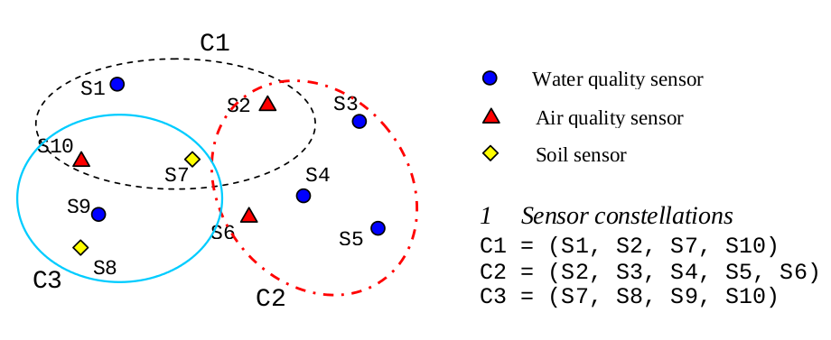

Observation Offerings¶
In the Sensor Observation Service 1.0.0 the concept of an Observation Offering is equivalent to that of a sensor constellation. An Observation Offering is analogous to a “layer” in Web Map Service because each offering is typically a non-overlapping group of related observations.
Creating a new offering¶
Open the “Offerings” panel.

Example
| Name: workshop |
| Description: demo dataset for FOSS4G meeting |
| Expiration (optional): 2015-01-01T00:00:00+02:00 |
| Validity: Enabled |
Associate procedures with offering¶
Activate the tab panel pressing “Offering-procedure memberships”.
In the dropdown list select the newly created offering “workshop”.
On the left side you will see all the procedure that will be assigned to that offering.
On the right there are all the procedures not assigned to that offering.
Use drag and drop functionality to move procedures from right to left.
Verify that procedures are associated with offering as desired¶
To verify execute a getCapabilities request.
Example
http://localhost/istsos/demo?request=getCapabilities§ion=contents&service=SOS&version=1.0.0
Note
replace “demo” in the URL with your service of interest